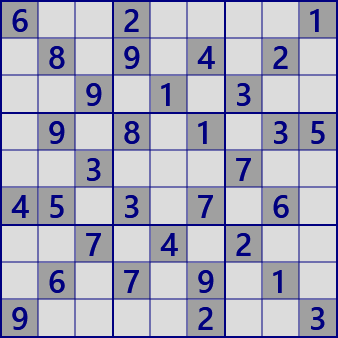
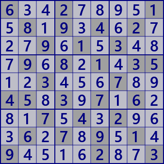

Introduction

This HP will explain more than 50 Sudoku algorithms. Several elementary algorithms are helpful for humans to solve with pencils and intelligence alone. Advanced algorithms are for programs.i think, this puzzle is extremely difficult for humans to solve. It would be better not to try. This is a puzzle handled by the program.
6..2....1 .8.9.4.2. ..9.1.3.. .9.8.1.35 ..3...7.. 45.3.7.6. ..7.4.2.. .6.7.9.1. 9....2..3
Rules of solving

The rule "Insert digit 1-9 for each row/column/block" is the
same as Sudoku. Contradiction as a solution method is prohibited.
Because Sudoku is a puzzle, it is trivial to be able to solve
any puzzle. This site deal with logically the algorithm to
explain truth or false. This is a local rule. i am aware that
there are different opinions.
The solution of Sudoku(digit array) on the upper is as shown.
But that is not a solution to the rules here. A logical
explanation for solving a solution is necessary.
Next...
The algorithms explained on this site can be found in the list of algorithms.
By understanding Sudoku-solving algorithms and adding the necessary code, you can build a program that solves Sudoku puzzles.
Furthermore, the source code for "GNPX"—C# program for creating and solving Sudoku puzzles—has been made publicly available.
The explanations on this site (more or less) correspond to the GNPX code.
Please feel free to download it and use it as a reference.
However, the GNPX code is (frequently) subject to change—whether for bug fixes, improvements, or simply on a whim.
There is no guarantee of long-term consistency.
Hence, the correspondence is only "approximate."
The best approach is to create your own code.
Sticking to your own personal style is also advantageous when it comes to developing and integrating more advanced algorithms.